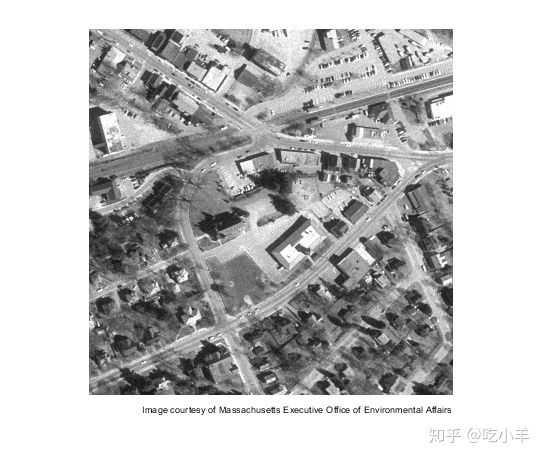
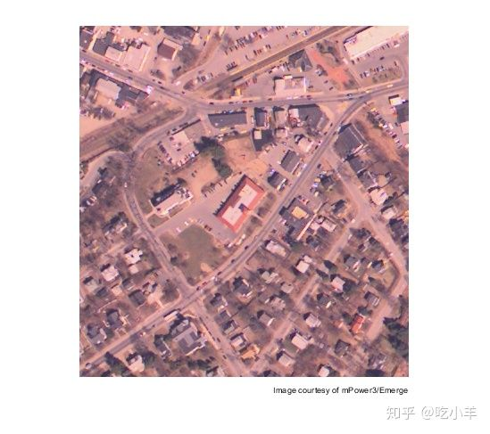
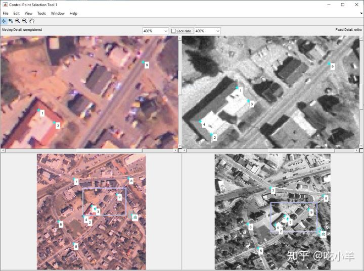
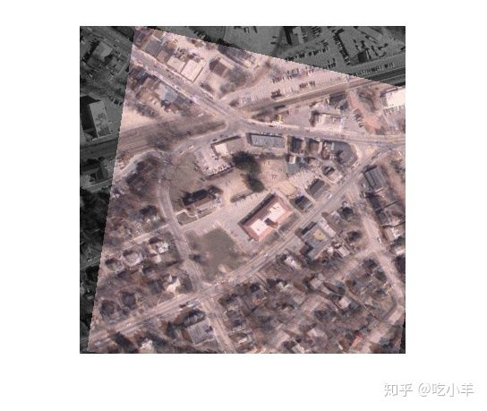

Home
本示例说明了如何通过选择两个图像共有的控制点并推断对齐控制点的几何变换来配准两个图像。
读取图像
将图像westconcordorthophoto.png读入工作区。该图像是已配准到地面的正射影像。
ortho = imread('westconcordorthophoto.png');
imshow(ortho)
text(size(ortho,2),size(ortho,1)+15, ...
'Image courtesy of Massachusetts Executive Office of Environmental Affairs', ...
'FontSize',7,'HorizontalAlignment','right');

将图像westconcordaerial.png读入工作区。该图像是从飞机上拍摄的，并且相对于正射影像有失真。因为未配准的图像是从远处拍摄的，并且地形相对平坦，所以大多数失真属于投影变换的。
unregistered = imread('westconcordaerial.png');
imshow(unregistered)
text(size(unregistered,2),size(unregistered,1)+15, ...
'Image courtesy of mPower3/Emerge', ...
'FontSize',7,'HorizontalAlignment','right');

选择控制点对
要以交互方式选择控制点，请使用cpselect函数打开“控制点选择”工具。控制点是您可以在两个图像中找到的地标，例如道路交叉口或自然特征。选择至少四对控制点，以便cpselect可以对这些控制点进行投影变换。选择相应的移动点和固定点后，关闭工具以返回到工作区。
[mp,fp] = cpselect(unregistered,ortho,'Wait',true);

推断几何变换
通过使用fitgeotrans函数，找到最能使移动点和固定点对齐的投影变换的参数。
t = fitgeotrans(mp,fp,'projective');
变换未配准的图像
要将转换应用于未配准的航拍图像，请使用imwarp函数。通过使用OutputView名称/值对参数指定转换后的图像的大小和位置与正射图像的大小和位置匹配。
Rfixed = imref2d(size(ortho)); registered = imwarp(unregistered,t,'OutputView',Rfixed);
通过将转换后的图像叠加在原始正射影像上，查看配准的结果。
imshowpair(ortho,registered,'blend')

======================================================================
我的测试结果及程序
下面是我测试的代码：

注：本文根据MATLAB官网内容修改而成。